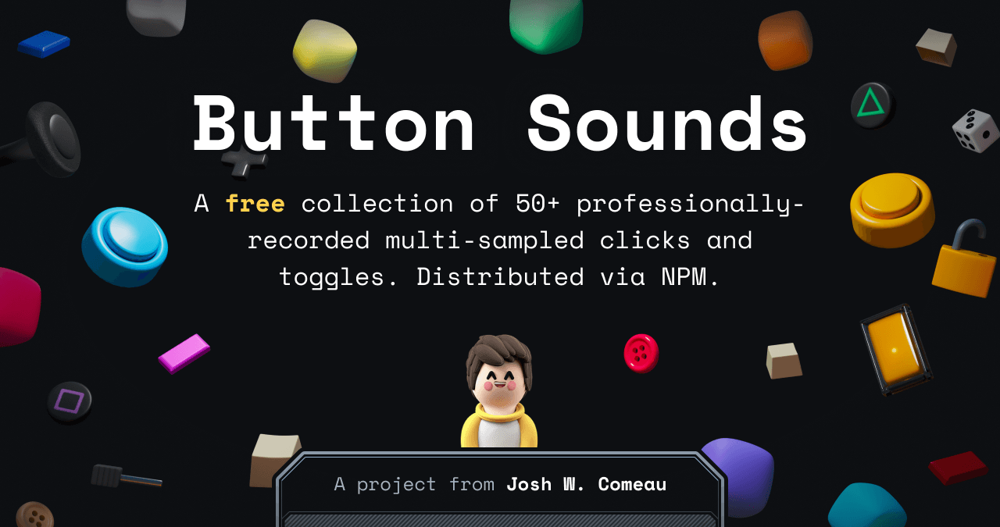

Security Desk · The Lead
1Password discloses a breach of its backend systems — an attacker rode an employee’s GitHub account to production, and customer vaults were never touched
The Nov. 25 incident report: malicious code pushed on Nov. 19 downloaded customer names, email addresses and non-secret account metadata; all possibly exposed credentials rotated, emailed recovery codes lengthened from six digits to ten characters, phishing attempts expected

TORONTO — 1Password published “Update on a security incident involving 1Password’s backend systems” on Nov. 25, disclosing that on Nov. 19 it began investigating indications that an attacker gained access to an employee’s corporate GitHub account. The actor used the account to access source code and push malicious code to backend services, which downloaded administrative data about customers: names and email addresses, account and user identifiers, account-creation and last sign-in times, public keys, Secure Remote Password protocol parameters, and tokens in certain emailed links for invitations, provisioning and account recovery. Vault contents and the keys protecting them were not affected, and 1Password does not hold any customer’s account password or secret key.[1][2]
The attacker also copied source code from private repositories and reached the CI/CD system, which “contains infrastructure related secrets”; every credential that may have been exposed has been rotated or revoked, with no impact on services, availability or product security. The emailed invitation and recovery tokens cannot open an account on their own — they require an SSO sign-in or a six-digit code sent to the registered address — and as a precaution those codes have been expanded from six numeric digits to ten alphanumeric characters, a length the post says makes brute-force guessing “practically impossible.” Containment so far: the affected GitHub account disabled, the stolen token revoked, internal GitHub, CI/CD and endpoint controls tightened, new detections added for this class of attack, independent cybersecurity experts brought in, and a validation pass that found no evidence of account takeovers through the exposed provisioning tokens.[1]
The company’s advice to customers is narrow: watch for phishing in the form of unexpected emails, texts or calls that mention 1Password, invitations or account recovery — and 1Password will never ask for an account password or Secret Key. The thread’s sharpest question is how one employee’s GitHub account could push code to production at all: “Interesting that there is no code review in place and the attacker could just deploy something,” one reader wrote — answered from below by a second who noted an administrator can often bypass review settings anyway (“the button just turns red in GitHub, still clickable”), and a third who countered that even admin bypass can be disabled. A fourth reader put the wider worry in one line: how far the attacker got, and what was extracted before detection, “is very concerning.”[2]
Culture Desk · Sound · Follow-Up
The button clicks keep climbing: 805 points, up 258 since the morning edition — and the thread has a better iOS fix than “use a desktop”

Button Sounds — Josh Comeau’s free collection of more than 50 professionally recorded clicks, presses and toggles, multi-sampled so the same switch never sounds identical twice, recorded on a Zoom H4 in a sound-treated room and MIT-licensed via npm — returned for a second edition at 805 points, up 258 since the morning paper’s 547.[3][4]
What changed in the thread is the iOS diagnosis. The site itself warns that “iOS Safari seems particularly strict” about blocking audio and advises checking the page on a desktop; one reader found the simpler route — flip the hardware silent switch off, a fix he admits took five minutes of poking around to find. The thread then litigated what the switch is even for: “the intent of the silent switch is to silence the ringer, not to mute the whole OS,” one reader argued, noting music keeps playing with it on; another countered that respecting silent mode is “perfectly reasonable” for a browser; and a third observed that many apps already misread the signal, muting all their audio so a game has to be un-silenced to be heard at all.[4]
AI Desk · Complexity · Most-Discussed
Scott Aaronson, four times over: the week’s proofs reached complexity theory’s oldest questions — and he now expects P ≠ NP “not far”
Scott Aaronson posted “HOLY SHIT HOLY SHIT HOLY SHIT HOLY SHIT” to Shtetl-Optimized on Wednesday at 1:01 pm, filed under AI, Complexity and “The Fate of Humanity,” and its 422-comment thread made it the day’s most-discussed story. The occasion: processing OpenAI’s and Anthropic’s proofs of VP ≠ VNP, hot on the heels of the Alpöge/Anthropic proof of the Riemann Hypothesis, and an OpenAI claim that the matrix-multiplication exponent ω is exactly 9/4 — a lower bound, matching the upper bound from the Oct. 6 “Mathocalypse” release.[5][6]
Two shocks, by his own count: that the answer to a question open since Volker Strassen’s 1969 ω < 3 is a rational number — and, bigger, that the AI could prove any lower bound of the form ω > 2 at all: “I never expected this challenge to be all that much easier than P ≠ NP.” A same-night release put the linear gates needed to compute the Fourier transform at N (log N)1/2+o(1), improving the O(N log N) fast Fourier transform that had stood since the 1960s, with a matching lower bound; Yupan Liu, he notes, just posted QIP(2) = PSPACE.[5]
On cryptography he was careful: “yes, I’m virtually certain, from multiple reliable sources, that the AI labs are now sitting on one or more bombshells in that area” — but he would not vouch for any specific version of them, warning that “exact statements of what was done may have been mangled in a game of Telephone.” The thread tested the politics of that: a breakthrough would be “forcibly classified by the organs of state security the same way the NSA had IBM keep differential cryptanalysis under wraps in the ’70s,” one reader argued; another answered that it is “a pretty different world” now, and that Aaronson is “far from being a random blogger.”[5][6]